The following topic details the process of working with redactions and annotations in Document View. Expand and read through the sections below to learn more about how to manage both.
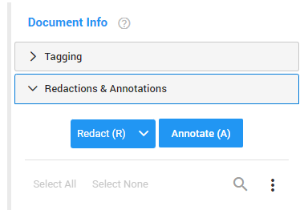
Redactions
You can apply redactions to a document as needed. Review below for information on how to apply and work with redactions.
Search and Redact
After running a search, you can apply redactions to specific search hits, or apply redactions to all hits, as needed.
Move from hit to hit (using the Go to next hit icon), and select Apply Redaction for a single hit
To redact
all highlighted search hits, select the Apply Redaction to all button.
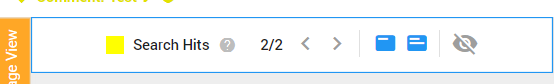
Redact (R)
Redact (shortcut: R) to protect sensitive, privileged and confidential information by hiding selected content.
Specified sections are blacked out or replaced with something else; Text, for example.
Redactions can be accompanied with 'exemption codes' to identify the regulations under which the redaction is made.
The redacted document can be printed out or used electronically.
Native files cannot be redacted. Redacting native files changes their character, which is akin to spoliation.
Depending on the permissions you have received, you may not be able to add redactions.
Apply Redactions
Select
in Document View.
Use the plus sign to draw a box.
Double click inside the box to edit the redaction text and/or code entry (you can select multiple code entries). You can also add a Motivation (explain why this redaction was made).
The motivation will be added in the Redaction Log and can be burned into to image during the production process.
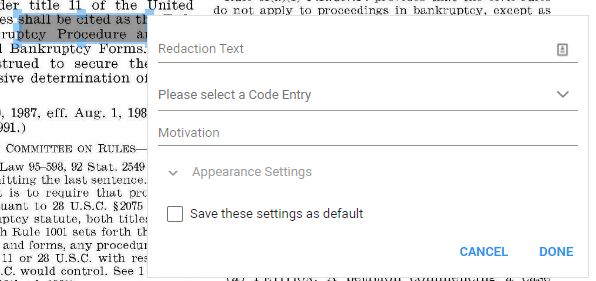
If needed, change the Appearance Settings. You can change the fill and font color. Click Done when finished.
The selected fill color will match the redaction summary color in the right pane.
To save all your settings for the next redaction, select 'Save these settings as default'. Each next redaction will have the same redaction text, code set/entry and appearance setting.
To approve, click Done.
To reject, click Cancel.
Quick Redact (Q)
For Quick Redact, press Q and draw a box immediately and repeatedly (if necessary).
Press Q again to leave the Quick Redact mode. Settings and appearance of redactions can be changed at a later time by double clicking on them.
Note 1: When double clicking on a Quick Redaction to change the settings/appearance, make sure you are outside Quick Redact mode
(the plus sign is not active/checkbox is not selected).
Note 2: Quick Redact mode is not saved when navigating to another document.
Press Q again to continue.
The checkbox 'Quick Redact Mode (Q)' is automatically (de)selected when pressing Q.
For more information, for example on changing the appearance settings, see the information above for regular redactions.
Redact Page (P)
For Redact Page, press P and the current (full) page will be redacted. Settings and appearance of redactions can be changed by double clicking on the page.
For more information, for example on changing the appearance settings, see the information above for regular redactions.
Note: You have the ability to withhold redacted pages from production. In the Production Wizard, on the Image Settings > Redactions tab, select Withhold Fully Redacted Pages.
Redact Pages (L)
Redact a range of pages. Define the pages you want to redact.
Redact Document (O)
Redact an entire document with a single range redaction for the entire document.
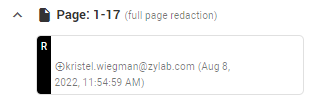
Hover above a redaction to edit the redaction settings (change page range or redaction code(s)), delete the redaction or select it.
Edit, Delete, and View Redactions
You can Edit, Delete or Select your own Redactions via the summaries in the right pane.
In the summary of the Redaction you see the (overlay) text/code (if defined), who redacted and when (including edits).You can also edit/delete your own redaction by double-clicking on it in the document.
Select the Delete icon or edit the settings of the highlighted (red border) Redaction.
Shortcut: Delete (a selected) redaction with the Delete button on your keyboard (inactive (Quick) Redactions mode).
Shortcut: Right-click on a redaction to add redaction codes or the settings (of a recently added redaction).
Select All to edit or delete all redactions and/or annotations.
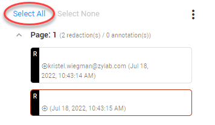
Note:
A selection of both redactions and annotations cannot be edited all at once.
Edit all selected redactions with the Edit Selected icon .
Delete all selected redactions with the Delete Selected icon .
Old redactions covered by new redactions are still visible when hovering above them.
Hits are visible in redacted areas:
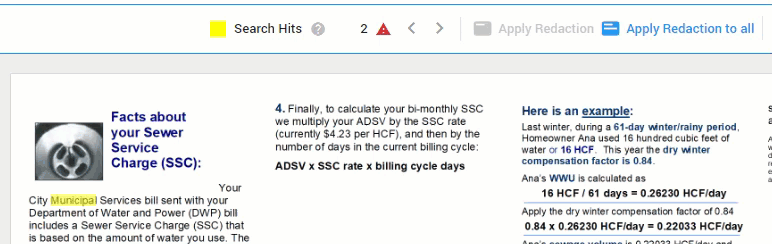
Hover above a hit to read it:
Move (your own) Redaction by clicking on it and dragging it to another position on the same page.
Resize (your own) Redaction by clicking on it, holding a corner or side with the mouse and dragging it to a new position.
Display Options
Define if Redactions are shown.
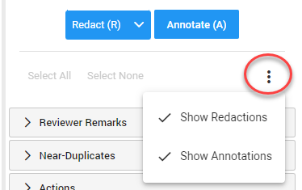
Filter Options
Redactions can be filtered by search terms to allow for quick modifications or deletion. Select the Filter icon to open the Filter option and enter your search term. Click to clear your filter.
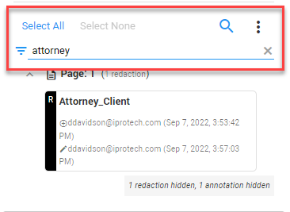
Annotations
You can apply annotations to a document as needed. Review below for information on how to apply and work with annotations.
Annotate (A)
Annotate (shortcut: A) to add comments to parts of the document. Reviewers are able to reply to each other's comments. You can only delete/edit your own comments.
Apply Annotations
Select
in Document View.
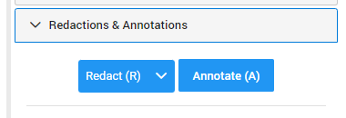
Use the plus sign to draw a box.
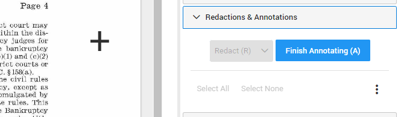
Double click inside the box to add a note (annotation).
Work With Annotations
You can Edit, Delete or Select your own Annotation via the summaries in the right pane.
In the summary of the Annotation you see the (overlay) text, who annotated and when (including edits). You can also edit or delete your own annotation by double-clicking on it in the document.
Select the Delete icon or edit the settings of the highlighted (red border) Annotation.
Shortcut: Delete (a selected) annotations with the Delete button on your keyboard (inactive Annotations mode).
Select All to edit or delete all redactions and/or annotations.
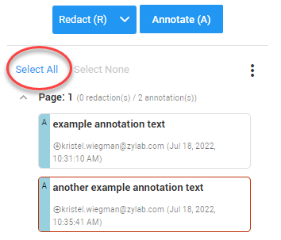
Note: A selection of both redactions and annotations cannot be edited all at once.
Edit all selected annotations with the Edit Selected icon . Delete all selected annotations with the Delete Selected icon .
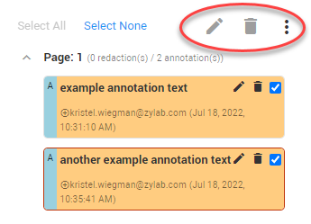
Move (your own) Annotation by clicking on it and dragging it to another position on the same page.
Resize (your own) Annotation by clicking on it, holding a corner or side with the mouse and dragging it to a new position.
Display Options
Define if and how Annotations are shown.
Filter Options
Annotations can be filtered by search terms to allow for quick modifications or deletion. Select the Filter icon to open the Filter option and enter your search term. Click to clear your filter.
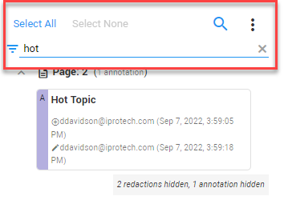
Edit, Delete, and View Annotations
You can Edit, Delete or Select your own Annotation via the summaries in the right pane.
In the summary of the Annotation you see the (overlay) text, who annotated and when (including edits). You can also edit or delete your own annotation by double-clicking on it in the document.
Select the Delete icon or edit the settings of the highlighted (red border) Annotation.
Shortcut: Delete (a selected) annotations with the Delete button on your keyboard (inactive Annotations mode).
Select All to edit or delete all redactions and/or annotations.
Note: A selection of both redactions and annotations cannot be edited all at once.
Edit all selected annotations with the Edit Selected icon . Delete all selected annotations with the Delete Selected icon .
Move (your own) Annotation by clicking on it and dragging it to another position on the same page.
Resize (your own) Annotation by clicking on it, holding a corner or side with the mouse and dragging it to a new position.
Display Options
Define if and how Annotations are shown.
Filter Options
Annotations can be filtered by search terms to allow for quick modifications or deletion. Select the Filter icon to open the Filter option and enter your search term. Click to clear your filter.
 in Document View.
in Document View.


 in Document View.
in Document View.